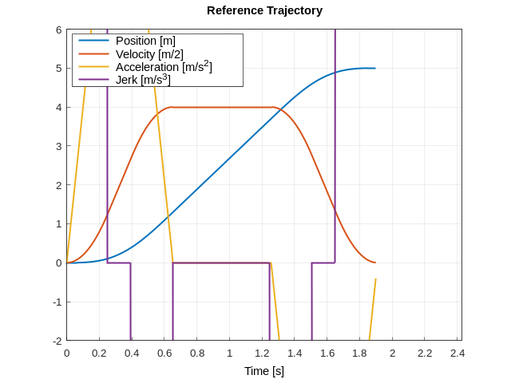
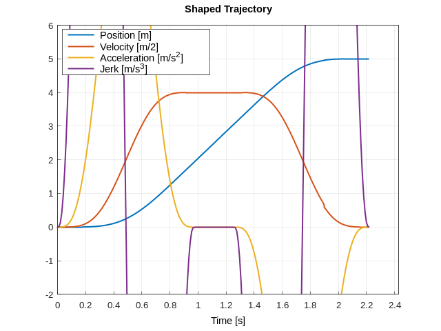
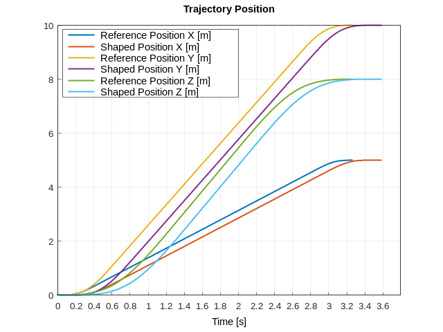
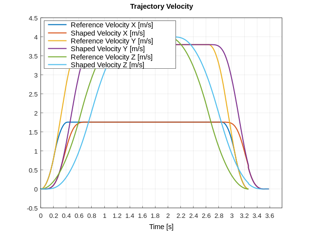
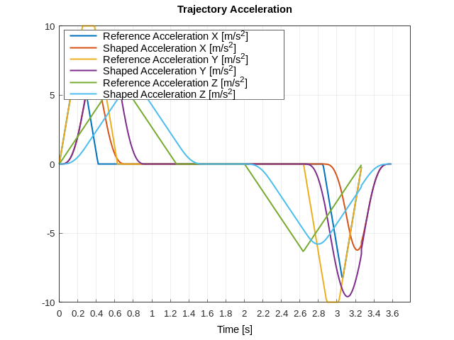
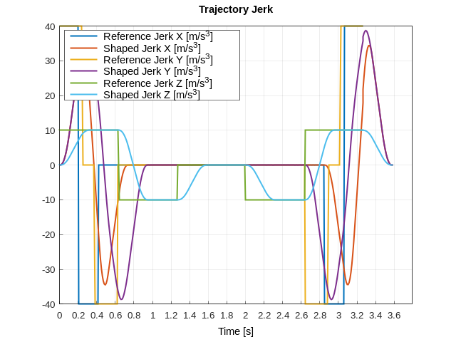
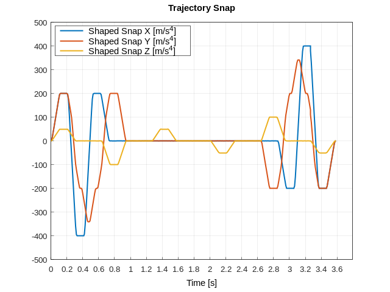

nested-shaper¶
Getting Started¶
The programmatic usage guide is available in the repository.
nested-shaper is a flexible input shaping library utilizing nested simple moving averages (SMA).
nested-shaper is designed to smooth trajectories by transforming lower-order polynomial trajectories into higher-order polynomial trajectories. By configuring the amplitude of the SMA, users can limit the maximum value of the derivatives of the trajectory.
While SMAs are commonly used for noise reduction in signal processing, nested-shaper is not intended for this purpose. Instead, nested-shaper processes trajectory samples at specific intervals, outputting a point on a higher-order trajectory along with the derivative values of the trajectory.
nested-shaper does not generate trajectories under physical constraints. It smooths pre-defined trajectories and can be used in conjunction with trajectory generation libraries such as ruckig
nested-shaper is implemented in C++14, is header-only, and does not require the C++ standard library, making it suitable for minimal size embedded systems.
 
When Should I Use It?¶
In most cases, jerk (the fourth derivative of position) suffices for precise model-based control of systems. However, some systems may require:
- Snap (the fifth derivative of position)
- Crackle (the sixth derivative of position)
- Pop (the seventh derivative of position) or higher-order derivatives.
Generating a trajectory with crackle continuity is computationally expensive.
Here, nested-shaper provides a solution. Assume an optimal jerk-limited trajectory is created. During runtime, nested-shaper outputs a shaped trajectory with limited snap, crackle, pop, or higher derivatives.
  
 
How It Works¶
The Theory section explains the background of SMA and its role in creating higher-order trajectories. It briefly covers concepts such as convolution, Laplace transforms, and inverse transforms.
Advanced Guide¶
While nested-shaper operates by averaging datasets, averaging is not always straightforward. For instance, averaging 3D rotations (and even 1D rotations) is more complex than averaging 1D scalar variables. The Advanced Guide explains how to customize averaging metrics based on different datasets.
License¶
nested-shaper is free to use and modify under the terms of the permissive BSD 3-clause license